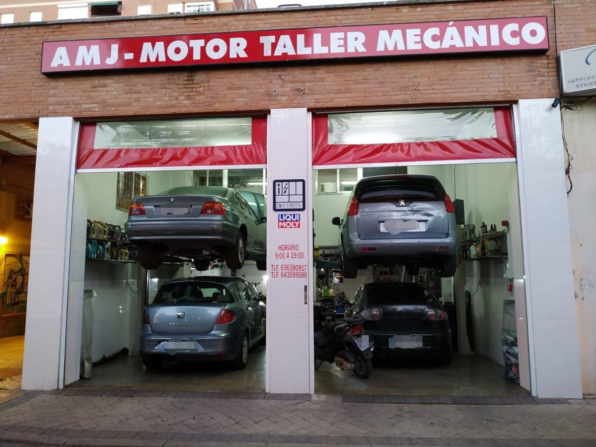

Aceite de calidad, mano de obra honrada
Trabajamos con aceites Liqui Moly. Escríbenos por WhatsApp con la marca y el modelo y te damos precio sin compromiso.

Taller mecánico en la calle Polonia, Leganés.
De lunes a viernes, sin cerrar a mediodía.
Déjalo por la mañana y recógelo al salir de trabajar.
| Lunes | 9:00–19:00 |
|---|---|
| Martes | 9:00–19:00 |
| Miércoles | 9:00–19:00 |
| Jueves | 9:00–19:00 |
| Viernes | 9:00–19:00 |
| Sábado | Cerrado |
| Domingo | Cerrado |
C. Polonia, 10
Loc 2y3, Madrid
Trabajamos con aceites Liqui Moly. Escríbenos por WhatsApp con la marca y el modelo y te damos precio sin compromiso.